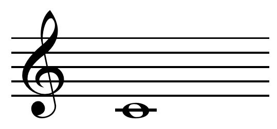

An important part of learning music is learning to read music.
<<<<<<< HEAD  ======= >>>>>>> bdcff13bf8a5af3d431454a68fab212e4c759a99
>>>>>>> bdcff13bf8a5af3d431454a68fab212e4c759a99
>>>>>>> bdcff13bf8a5af3d431454a68fab212e4c759a99
>>>>>>> bdcff13bf8a5af3d431454a68fab212e4c759a99
The pictured note is the fourth C on the piano, also known as middle C. It’s easily distinguishable by the single line that goes through it. On the treble clef, it is located on the line under the bottom line. On the bass clef, however, middle C is <<<<<<< HEAD located on the line above the top line. On the very left is a treble clef, also known as a “G” clef. The clef curls around the second line, which represents the note G on the treble clef.
 =======
located on the line above the top line. On the very left is a treble clef, also known as a “G” clef.
The clef curls around the second line, which represents the note G on the treble clef.
>>>>>>> bdcff13bf8a5af3d431454a68fab212e4c759a99
=======
located on the line above the top line. On the very left is a treble clef, also known as a “G” clef.
The clef curls around the second line, which represents the note G on the treble clef.
>>>>>>> bdcff13bf8a5af3d431454a68fab212e4c759a99
This is a bass clef, also known as a “F” clef. The clef curls around the fourth line, which represents the note F on the bass clef.
There are easy ways to remember the notes on the treble clef. For the lines, remember the sentence: “Every Good Boy Deserves Fudge” For the spaces, no acronym is required, the notes form the word: “FACE” As for the bass clef, there are also mnemonic devices for you to use: For the lines, remember: “Great Big Dogs Fight Animals” For the spaces, use: “All Cows Eat Grass” <<<<<<< HEAD ======= >>>>>>> bdcff13bf8a5af3d431454a68fab212e4c759a99
© 2019 GitHub, Inc. Terms Privacy Security Status Help Contact GitHub Pricing API Training Blog About